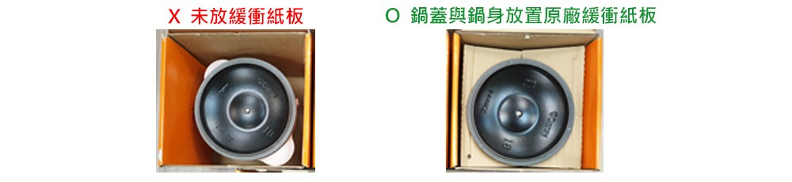

Have me.
Have a lovely life.
 登入/註冊
登入/註冊 首頁
首頁 商品總覽
商品總覽 購物車
登入/註冊
首頁
商品總覽
購物車
購物車
登入/註冊
首頁
商品總覽
購物車LE CREUSET的鍋具是由具備優秀導熱能力的琺瑯鑄鐵製成，能均勻加熱，適合用於烹調需要仔細調整火侯的燉煮或油炸、炊飯等料理。 而保溫能力更優於薄型鍋具，因此料理不易變涼，更能彰顯溫熱料理的美味。設計簡約且色彩繽紛，亦可將鍋具直接作為餐具擺飾。
由於鍋具整體包含鍋蓋皆由鑄鐵製成，因而會變得比較重。而重量這點也是LE CREUSET的特徵，因為鍋蓋的厚實重量，不會讓鍋內的蒸氣逸散，因此不需大量水分，就能以蒸煮的狀態烹調料理。而醬汁不會熬乾，鮮味不會流失亦須歸功於厚實的鍋蓋。
所有產品均可用於洗碗機，但這些產品除外：有顏色的不銹鋼鍋蓋頭、金色與銅色蓋頭、貼花產品。
初次購買，建議可選購容易運用的20cm或是22cm的圓形鐵鍋。 除了燉煮之外，亦可用於烹調炊飯或紅燒等料理，也能搭配單獨購買的「不鏽鋼蒸架」一同使用，該尺寸能讓料理的應用範圍更加廣泛。
LE CREUSET的鍋具是由導熱性佳的鑄鐵製成，因此只要有一處接觸熱源，即可將熱度傳導至鍋具整體。
鍋具的外型依使用者喜好而定。圓形鐵鍋是容易操作的必備鍋具。而橢圓鍋具則是可直接置入一整隻雞或是較長的蔬菜類等食材，而直接放置在餐桌上也顯得簡潔俐落。
在噴灑琺瑯層的工序時可能會產生氣泡，但並不影響使用。洗淨後，存放時只需確實地去除水分，就可防止生鏽。
在噴灑琺瑯層的過程中，空氣中的微小的鑄鐵片或粉末會落在琺瑯的彩色塗層上，是無法避免的現象。洗淨後，存放時只需確實地去除水分，該處也不會生鏽。
琺瑯鑄鐵鍋商品的鍋蓋邊緣處，設有3個突起處為了讓蒸氣順暢的排出。 藉由這3個突起處，能夠讓水蒸氣均勻且安全地排出，防止烹煮時產生劇烈水蒸氣散逸。
鍋片夾是為了保護商品在出貨時讓商品不受損傷。烹煮料理時，請拿掉鍋片夾後再使用鍋具。 另外，存放鍋具時將鍋片夾放置於鍋蓋與鍋體之間，即可確保透氣性，保護鍋具不會生鏽或碰傷。 ※請注意，折扣商品等可能不會附帶鍋片夾。
請用乾布充分地擦乾水分，並存放於沒有濕氣且通風良好的地方。另外，為避免不慎摔落，請儘可能收納於較低的地方。
我們並未提供鍋蓋以及鍋體的單獨購買服務。
使用時如果貼著標籤，可能會使得標籤部分因受熱而變形或燒焦，因此在開始使用鍋具前，請撕除所有貼在商品上的標籤。 若標籤不易撕除，請用熱水浸泡標籤部分，等標籤變軟後再撕除。或是在標籤部分塗抹大量食用油，放置10~15分鐘後再用熱水沖洗。
在戶外活動使用時，建議使用瓦斯爐或戶外用噴槍等可調節溫度的熱源。 但是，當遇到風向不定或天候不佳造成火焰不穩時，請小心使用，注意安全。
加上鍋蓋放入烤箱使用時，塑膠製電木頭的耐熱溫度在既有系列產品為攝氏200度，典藏系列為攝氏250度。放入烤箱時使用時請手動設定，勿超過個別鍋具的耐熱溫度。另外，烤箱的蒸氣、熱風、自動菜單烹調設定有時會超過鍋具耐熱溫度，因此請避免使用這些功能。
以高溫燒製而成的LE CREUSET瓷器，是以陶瓷器特有的美麗色彩，以及溫潤質感為魅力特點的商品。容易清除污垢，保養亦很簡單。 從烤箱料理到作為能讓料理顯得更加精美的餐具，使用時皆能享受到其變化豐富的各式應用。
可用於微波爐與烤箱。
耐熱溫度差距為攝氏180度。即使在其耐熱溫度範圍內，急遽的溫度變化亦會導致瓷器破損，使用時請注意。
瓦斯爐、電磁爐、黑晶爐、烤盤、瓦斯爐嵌入式烤魚專用烤箱、電烤箱等會導致瓷器破損，因此無法使用這些熱源。
可以用於壓力鍋。
烤箱的蒸氣、熱風、自動菜單烹調設定功能，依機種不同溫度可能會達到攝氏300度以上。瓷器可能會因此破損，所以即使設定溫度在攝氏260度以下，也請不要使用這些功能。請務必手動設定至攝氏260度以下。烤箱內較狹窄或靠近熱源處，可能會超過設定溫度，因此使用時請遠離熱源。 另外，即使在其耐熱溫度範圍內，急遽的溫度變化亦會導致瓷器破損，使用時請注意。
這些稱為金屬痕或是刀痕，是當刀具用力刮過餐具時因金屬削落而產生的痕跡。使用抹布沾取專用清潔劑「鍋盤清潔劑」或是軟性去污清潔劑擦拭，即可清除。
使用後若不加以保養並持續重複使用，使用漂白劑或清潔去污劑、硬質刷子等清潔用具的話，會刮除琺瑯層的表面使得光澤消失，變得粗糙，成為生鏽的原因。使用後保養壺具時，請用海綿沾取中性清潔劑後確實洗淨，並擦乾水分。
具備優秀耐熱性以及持久性的LE CREUSET耐熱矽膠廚具商品，從加熱烹調到製作糕點都能大展所長。不會損傷您重要的鍋具或瓷器，讓您能安心並舒適地使用，享受料理樂趣。能與鍋具搭配的多樣化色彩選擇也是使用樂趣之一。
 商品的耐熱溫度為攝氏250度。微波爐、烤箱、蒸籠、壓力鍋等皆可使用。
另外，耐冷溫度為攝氏負40度，因此可以存放於冷藏室或冷凍庫裡。落。
商品的耐熱溫度為攝氏250度。微波爐、烤箱、蒸籠、壓力鍋等皆可使用。
另外，耐冷溫度為攝氏負40度，因此可以存放於冷藏室或冷凍庫裡。落。
矽膠鏟頭可用於洗碗機或烘碗機。但因為手柄為天然木材可能造成變形，所以無法使用洗碗機或烘碗機清洗。手柄的保養方式，建議取下鏟頭，以中性清潔劑和海綿手洗後自然晾乾。
由於握把為天然木材，因此靠近瓦斯爐時會燒焦，使用時請注意。我們並無單獨販售握把部分。
因矽膠的顏色不同，部分色款容易出現顏色不均或出現線狀，但商品品質方面沒有問題，可繼續使用並不受影響。
可以作為鍋墊使用。但是， 若放置剛加熱後的熱鍋，可能因為餐桌材質不同造成隔熱墊變形或變色，使用時請注意。
若觸碰到罐頭切口或刀具等鋒利的物體時，就會容易產生龜裂。之後若持續使用，從小的裂縫處開始可能會形成龜裂或損傷。
很抱歉，我們沒有提供矽膠部分和握把部分的單獨購買服務。
 V油刷是矽膠製的烹調用刷具，可用刷具沾取蛋液用於麵包或糕點表面增亮，沾取奶油刷在容器上，或是沾取油脂塗抹烤盤或煎盤表面時使用。
其特徵為使用熱水沖洗即可簡單完成刷具保養。特別適合用於將帶有黏稠度的蛋黃或奶油、醬汁塗抹到食材上時使用，亦可用來清除烹調時產生的浮沫。
V油刷是矽膠製的烹調用刷具，可用刷具沾取蛋液用於麵包或糕點表面增亮，沾取奶油刷在容器上，或是沾取油脂塗抹烤盤或煎盤表面時使用。
其特徵為使用熱水沖洗即可簡單完成刷具保養。特別適合用於將帶有黏稠度的蛋黃或奶油、醬汁塗抹到食材上時使用，亦可用來清除烹調時產生的浮沫。
請您將所有需要購買之商品放入購物車後，再點選進行結帳。依步驟完成結帳程序送出訂單後，於電子信箱即可收取到一封確認信，請您於24小時內進行付款。 若您未於期限內進行付款，我們將自動取消您的此筆訂購。若仍需訂購，請您重新下單。 成功支付完畢後，您將收到另一封訂單確認信，訂單正式成立。
購物車結帳完成後，網頁將自動連結至綠界科技(ECpay)第三方線上支付，進行線上刷卡作業，請正確填妥您的交易資訊，並收取手機簡訊完成線上刷卡。
您可使用VISA/Master/American Express進行交易。
於刷卡支付過程，若發生付款失敗之情形，基於安全考量，我們將立即取消訂單編號。很抱歉，一旦訂單被取消，將無法重新啟用。若仍需訂購，請您重新下單。
成功付款完成後，自此訂單正式成立，我們在訂單成立後(不含當日)，三個工作天內(不含例假日及連續假期)配送商品至您所指定的地址。目前尚不接受離島訂單，敬請見諒。
一、依消費者保護法之規定，線上購物消費者享有商品貨到日起七天內(含例假日)猶豫期即鑑賞期的權益。但猶豫期並非試用期，如您有退/換貨需求時，請保持商品本體、贈品、內外包裝、及所有附隨文件或資料的完整性。
若有任何缺漏或毀損，恕不接受退貨申請。請勿毀損彩盒及黏貼貨運單。若商品未恢復原狀，恕不接受退換貨。

二、外包裝、內部緩衝包材及其內容物、贈品等均屬於商品的一部分，消費者於猶豫期間主張退貨者，若商品於退貨時不完整(如原廠緩衝包材遺失、毀損或缺件等)，恕不辦理退貨。
任何不完整、使用過、有毀損或髒汙之商品將不予接受退換。
三、本站所銷售之商品若一經拆封則無法回復原狀的商品，在您還不確定是否要辦理退貨以前，請勿拆封。
四、為了加快作業流程，請您在寫申請退換貨的信件時依照以下指定的正確格式提供詳細訂單資訊，訂單資訊可在您帳戶內的訂單明細找到。
A. 訂單編號
B. 取件人姓名
C. 取件人電話
D. 取件地址
E. 退貨原因
請將上述退貨通知寄至ec.tw@lecreuset.com，我們會派宅配至您的指定收貨地點取貨。
五、我們不接受非指定之快遞運送服務，亦不能對從未收到的包裹承擔責任，因此我們會派專人至指定地址回收您的退貨。
六、請注意！退貨僅接受整筆退貨，恕不接受部分退貨。鑑賞期非試用期，產品須保持全新未拆封(包含所有紙箱紙盒)，若有滿額禮或贈品也須一併退還，若有缺件恕不接受退貨。
七、收到退貨商品確認無誤後，我們將再進行信用卡刷退，所有程序約8~14工作天。實際退款日期依您信用卡結帳日於本期或下期帳單顯示。
八、無法退換貨說明：
( 1.)未附上原包裝盒含外包裝、緩衝包材、包裝不完整及破損無法辨識之商品。
( 2.)因特別說明已註明無法退換貨之商品。
( 3.)如商品有瑕疵，運輸過程造成貨品毀損、貨品品項錯誤，請於一個工作天內拍照存證並立即與客服聯繫，以便安排後續處理。
九、如因個人因素退貨次數過多，本公司將視情況決定是否暫停出貨，煩請見諒。
退貨未達滿$2,000免運或當時活動免運門檻，需於退貨商品金額內扣除訂單應收運費。
目前本站提供鑑賞期內的換貨服務(限量商品除外，僅提供退貨服務)，若您有換貨的需求，請於鑑賞期內先提出申請，我們將派請宅配收取商品，收到商品確認無誤後(商品需無使用並保持包裝完整)，將再寄出新品，所有程序約10~18個工作天，請耐心等候。 LE CREUSET商品皆享有保固服務，非人為損壞我們都會為您處理，但人為損壞或正常耗損非保固範圍之內。商品外部的細微黑點為手工製作過程中必然產生之現象，且其上有透明琺瑯保護，非瑕疵或損壞，請放心使用。
我們將於鑑賞期後以平信方式寄發紙本發票至帳單地址，若須開立抬頭請email至客服信箱ec.tw@lecreuset.com。